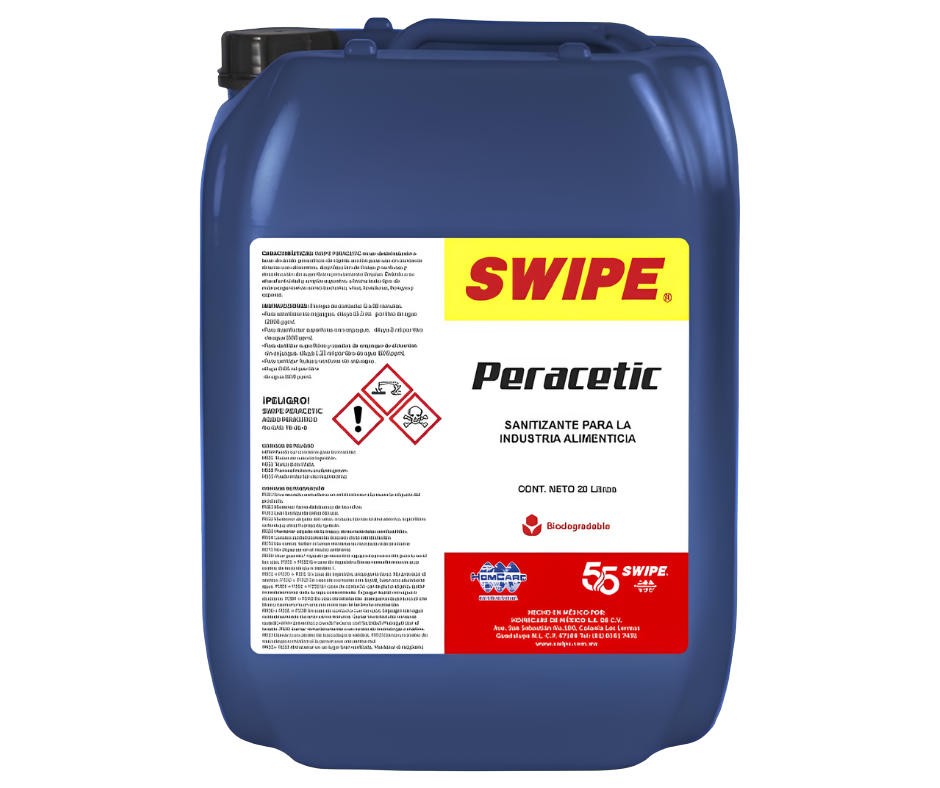

Conociendo SWIPE® Peracetic
Desinfección inteligente de nueva generación: rápida, efectiva y 100% biodegradable para el cuidado de nuestros pacientes en Hospital Arboledas.


¿Qué es SWIPE® Peracetic y qué elimina?
Desinfectante a base de ácido peracético (14–16%), aprobado por FDA y USDA (sustancia segura GRAS). Haz clic en cada patógeno para escanearlo.
- ✅ No genera espuma ni deja residuos
- ✅ No imparte olor ni color
- ✅ Actúa incluso en agua fría (hasta 4 °C) y agua dura
- ✅ Efectivo en amplio rango de pH (2 a 8)
¿Cómo actúa y qué pasa después?
Presiona el botón para simular en tiempo real cómo desinfecta y desaparece sin dejar tóxicos.
Listo para simular: el ácido peracético rompe la pared del patógeno por oxidación rápida y luego se descompone en elementos naturales.
¿Dónde SÍ y dónde NO aplicarlo?
Toca cualquier material para escanear su compatibilidad con SWIPE® Peracetic.
¿Cuánto producto uso? Calculadora Interactiva
Elige la tarea y desliza los litros de agua para ver la medida exacta en el medidor.
Rutina práctica en 4 pasos
Haz clic en cada paso para marcarlo como completado y prueba el cronómetro de contacto.
Tu Armadura Clínica: EPP Obligatorio
Haz clic en cada equipo para ver qué zona protege al dosificar el concentrado del porrón.
¿Cómo guardamos el porrón correctamente?
Buenas prácticas para conservar la potencia del producto y mantener segura el área.
✅ Lo que SÍ hacemos
- Vertical y hermético: Mantener el porrón de 20 L parado y bien cerrado. Abrir solo al dosificar.
- Fresco y ventilado: Área seca con ventilación y temperatura máxima de 35 °C.
- Vigilar caducidad: Vida útil de 12 meses en envase original.
- Higiene personal: Lavarse manos y cara con agua y jabón después de dosificar.
❌ Lo que NUNCA hacemos
- Cero calor o sol directo: Alejar de luz solar, estufas, chispas o flamas.
- Lejos de alimentos: No guardar junto a comida o bebidas, ni comer/fumar al manipularlo.
- No reenvasar ni contaminar: No usar envases sin etiqueta ni devolver mezcla al porrón.
- ¡Jamás mezclar con cloro! Mantener separado de productos clorados.
¿Qué hacer en caso de accidente o derrame?
Selecciona cada escenario para desplegar el protocolo de acción rápida (MSDS).
Mini-Quiz para Enfermería
4 preguntas rápidas para reforzar lo aprendido hoy.
Cargando pregunta...
Gracias por cuidar con precisión cada detalle
SWIPE® Peracetic es nuestro aliado práctico, rápido y biodegradable para mantener nuestras áreas y equipos seguros para cada paciente.
📁 Documentos Oficiales de Consulta
Disponibles para abrir o descargar directamente: